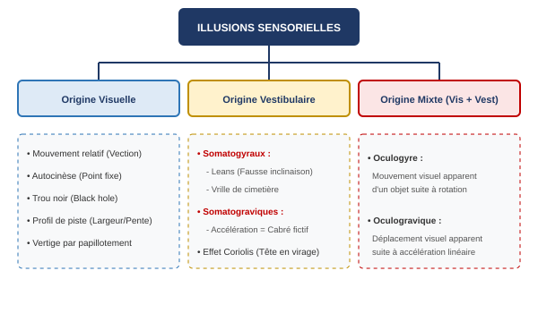
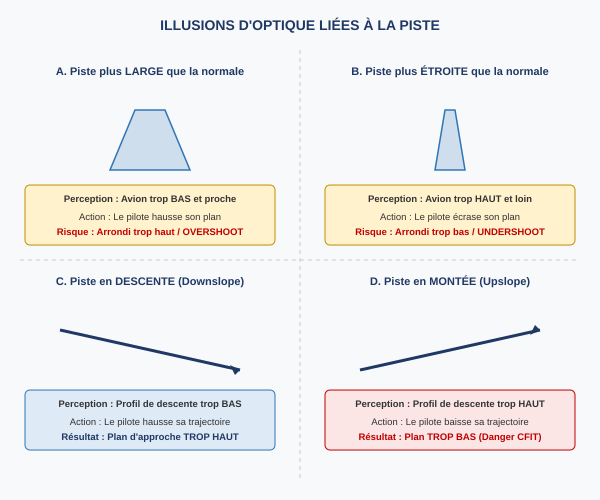

1. Introduction et Mécanismes de la Perception
La perception de l'espace en vol repose sur une chaîne complexe d'organes sensoriels interconnectés[cite: 476]. Pour construire une représentation mentale fidèle de la position de sa tête et de son aéronef, le système nerveux central du pilote traite simultanément des données issues de plusieurs récepteurs[cite: 477, 484]:
- La vision, qui constitue le capteur le plus important et le plus précis pour l'orientation spatiale[cite: 477, 668].
- Les informations vestibulaires issues de l'oreille interne, qui mesurent les accélérations angulaires et linéaires[cite: 481].
- L'audition, qui apporte des indices environnementaux complémentaires[cite: 482].
- Les réflexes posturaux (proprioception ou "sensibilité profonde"), souvent vulgarisés sous le terme de "sens du siège"[cite: 483].
Une illusion sensorielle se définit mathématiquement et physiologiquement comme la différence ou l'écart entre la perception erronée de l'organisme et la réalité physique objective[cite: 488]. Ces anomalies proviennent de trois défaillances principales : un manque pur d'informations, une mauvaise interprétation par les capteurs ou une décorrélation flagrante entre les stimuli réels et le ressenti du pilote[cite: 490, 491, 492]. Le danger majeur associé à ce phénomène réside dans l'apparition concomitante de la désorientation spatiale et du mal des transports (cinétose)[cite: 485, 486].

2. Illusions Sensorielles d'Origine Visuelle
La désorientation spatiale d'origine visuelle est provoquée par une déformation du signal physique initial, une absence de repères extérieurs, une mauvaise perception géométrique par le capteur oculaire ou un traitement erroné de l'information par le système nerveux central[cite: 496, 497, 498, 499, 500].
Le mouvement relatif (Vection)
Ce phénomène se produit lorsqu'un mouvement dans le champ visuel périphérique est interprété à tort comme un déplacement propre de l'aéronef[cite: 505]. Par exemple, au parking, un avion voisin qui recule génère l'illusion immédiate que notre propre appareil avance. De plus, la hauteur importante du cockpit au-dessus du sol sur les gros porteurs altère fortement la perception cinétique : elle donne une fausse impression de vitesse excessive lors du roulage au sol[cite: 507, 508].
L'autocinèse (Autokinesis)
Lorsqu'un pilote fixe de manière prolongée un point lumineux isolé et stationnaire dans un environnement nocturne dépourvu d'autres repères visuels, de minuscules mouvements oculaires réflexes se produisent à l'insu du cerveau[cite: 548, 549, 551]. Le système nerveux central ignore ces micro-mouvements et les interprète faussement comme un déplacement erratique du point lumineux extérieur[cite: 552]. Le pilote croit alors que l'objet visé est en mouvement[cite: 550].
Le vertige par papillotement (Flicker Vertigo)
L'activation des feux à éclats (stroboscopes) en pleine couche nuageuse, ou la réflexion cyclique de la lumière du soleil à travers le plan d'une hélice ou d'un rotor, engendre une perception répétitive de flashs lumineux[cite: 539, 541, 542, 544]. Cette stimulation stroboscopique peut provoquer un vertige aigu, une désorientation sévère et, dans les cas extrêmes chez les sujets prédisposés, des crises d'épilepsie[cite: 545, 546]. La procédure standard exige l'extinction immédiate des stroboscopes lors du vol aux instruments en conditions de visibilité réduite[cite: 547].
Fausses références d'horizon et séparation verticale
Après le décollage de nuit, un alignement rectiligne de lumières au sol (comme une route éclairée ou un littoral) peut être confondu par le pilote avec l'horizon réel, surtout si les étoiles sont masquées[cite: 557, 558]. Cette confusion mène à l'établissement d'une fausse référence d'assiette[cite: 558]. De la même manière, au-dessus de l'eau, les feux des bateaux de pêche sont fréquemment confondus avec des étoiles, incitant le pilote à modifier sa trajectoire vers un profil descendant dangereux[cite: 559]. En relief montagneux, l'émergence d'une couche de nuages bas peut masquer les repères bas et conduire le pilote à prendre les lumières des habitations en altitude pour des étoiles, abaissant dangereusement sa trajectoire de vol[cite: 560]. À grande distance, un avion ou un massif montagneux semble toujours situé plus haut qu'il ne l'est en réalité, avant de passer finalement sous le plan de l'observateur[cite: 554, 555, 556]. Un terrain en pente douce peut également fausser l'assiette visuelle en vol à basse altitude[cite: 561].
3. Illusions Spécifiques en Approche et Atterrissage
Les phases d'approche et d'atterrissage concentrent à elles seules 50 % des accidents aériens mondiaux[cite: 563]. Parmi ces événements, 73 % sont imputables directement à des erreurs humaines liées à la charge de travail visuelle intense requise par le jugement initial du plan, le maintien de la trajectoire de descente et l'évaluation de la proximité du sol[cite: 563, 564, 565, 567, 568].

Dimensions de la piste : Largeur et Longueur
Le système visuel du pilote s'habitue aux proportions de sa piste de référence habituelle[cite: 569]. Lors de l'arrivée sur une piste inconnue, les anomalies de dimensions provoquent des erreurs systématiques d'évaluation de la hauteur[cite: 583]:
- Piste anormalement LARGE : L'avion semble beaucoup plus bas et plus proche qu'il ne l'est en réalité[cite: 584]. Le pilote a tendance à adopter un plan d'approche trop élevé, déclenche son arrondi trop haut et s'expose à un dépassement de piste (overshoot)[cite: 584].
- Piste anormalement ÉTROITE : L'avion donne l'illusion d'être trop haut et éloigné[cite: 585]. Le pilote réagit en écrasant son plan de descente, effectue un arrondi trop bas et risque un impact avant le seuil de piste (undershoot)[cite: 585].
Pente de la piste et du terrain de fond
- Piste en descente (Downsloping runway) : Elle donne l'illusion visuelle que l'avion est trop bas sur son plan[cite: 573]. Le pilote compense en haussant sa trajectoire, ce qui engendre une approche trop haute[cite: 576].
- Piste en montée (Upsloping runway) : Elle génère l'illusion exacte inverse, à savoir que l'appareil est situé au-dessus du plan nominal[cite: 578]. Le pilote baisse son plan et effectue une approche trop basse, augmentant drastiquement le risque d'impact sans perte de contrôle (CFIT)[cite: 582].
- Terrain en montée avant le seuil : Un relief ascendant situé en amont de la piste donne l'impression d'une hauteur excessive, provoquant une approche dangereusement basse[cite: 598, 600]. Inversement, un terrain en descente induit une approche trop haute[cite: 604, 605].
L'effet de trou noir (Black Hole Effect)
Cette illusion survient de nuit lors d'une approche effectuée au-dessus d'une zone totalement dépourvue de repères lumineux (vols au-dessus de la mer, d'une forêt dense, d'un désert ou de la jungle), où seules les lumières de la piste lointaine sont visibles[cite: 586, 587]. En l'absence totale d'indices visuels périphériques pour matérialiser le relief, le pilote subit l'illusion d'être positionné trop haut sur le plan de descente[cite: 588, 589]. Il adopte en conséquence une trajectoire rectiligne exagérément basse, conduisant inévitablement à un impact prématuré avec le sol bien avant le seuil de piste (touchdown short)[cite: 590]. De plus, en cas de perte de vitesse involontaire couplée à une perte d'altitude graduelle, la piste peut paraître parfaitement stationnaire sur le pare-brise, simulant une approche stabilisée fictive jusqu'à l'impact[cite: 612, 613, 614].
4. Illusions d'Origine Vestibulaire (Oreille Interne)
Le système vestibulaire est composé des canaux semi-circulaires (qui détectent les accélérations angulaires lors des rotations sur les trois axes) et des organes otolithiques (l'utricule et le saccule, qui captent les accélérations linéaires et la gravité)[cite: 619, 660]. En l'absence de références visuelles, ces capteurs mécaniques possèdent des limites physiologiques strictes qui induisent de graves erreurs de perception[cite: 619].
Illusions somatogyrales : Les "Leans" et la Vrille de Cimetière
L'illusion somatogyrale est la sensation erronée de tourner dans la direction opposée au mouvement réel de l'avion, provoquée par l'incapacité de l'oreille interne à enregistrer fidèlement une rotation prolongée[cite: 617, 619].
Le processus physiologique se décompose en quatre étapes fondamentales[cite: 615]:
- A. Vol rectiligne en palier : L'endolymphe (liquide des canaux) est immobile, les cils sensoriels de la cupule restent verticaux. Sensation de neutralité parfaite[cite: 623].
- B. Début de rotation : Lors de la mise en virage, l'inertie du liquide crée un mouvement relatif du fluide qui incline les cils. Le pilote perçoit correctement la rotation[cite: 624, 627, 628].
- C. Rotation prolongée à taux constant : Après environ 15 à 30 secondes de virage stabilisé, le liquide finit par rattraper la vitesse de rotation de la paroi du canal. Les cils sensoriels reviennent en position verticale érigée, transmettant un faux signal de neutralité (sensation de vol rectiligne alors que l'avion est toujours incliné)[cite: 630, 634].
- D. Arrêt de la rotation : Lors du retour aux ailes horizontales (décélération angulaire), le liquide continue temporairement sa rotation par inertie mécanique. Les cils sont fléchis dans le sens inverse, projetant au cerveau la sensation violente d'engager un virage de l'autre côté[cite: 618, 635, 638, 639].
Cette fausse impression pousse le pilote à incliner à nouveau l'avion du côté initial pour compenser : c'est l'illusion des Leans. Si cette situation dégénère lors d'une vrille prolongée, elle mène à la vrille de cimetière (Graveyard spin) : le pilote initie la sortie de vrille, ressent une rotation inverse fictive intense, cède à son illusion et réengage l'avion dans sa vrille initiale destructrice[cite: 640, 641, 643, 644, 645].
L'illusion somatogravique (Somatogravic illusion)
Elle découle d'une mauvaise interprétation des déplacements des otolithes face à une forte accélération linéaire, particulièrement critique lors de la phase de décollage initial[cite: 659, 660, 661].
L'accélération linéaire vers l'avant ($\vec{a}$) combine son vecteur d'inertie avec l'attraction terrestre ($\vec{g}$). Les otolithes basculent vers l'arrière, reproduisant fidèlement le stimulus d'un fort cabré[cite: 660].
Croyant à tort que l'aéronef est en train de cabrer excessivement (risque de décrochage), le pilote a le réflexe instinctif de pousser vigoureusement sur le manche, ce qui précipite l'avion vers le sol (impact face au sol à haute vitesse)[cite: 662].
L'effet Coriolis
Si l'avion maintient un virage stabilisé prolongé et que le pilote effectue un mouvement brusque de la tête (vitesse de rotation de la tête supérieure à environ 3° par seconde) dans un plan différent de celui du virage, il déclenche une stimulation croisée de plusieurs canaux semi-circulaires simultanément[cite: 663, 664, 665, 666]. Cette interaction gyroscopique intracrânienne génère une illusion immédiate et violente de rotation, de basculement ou de tonneau, accompagnée d'un étourdissement sévère et de nausées[cite: 664, 666]. Cela crée un conflit aigu entre les différents sens[cite: 667].
5. Illusions d'Origine Mixte
Les illusions de nature mixte proviennent de l'interaction physique et visuelle directe entre les mouvements de l'œil et les accélérations subies par l'appareil[cite: 669].
- L'illusion oculogyre (Oculogyral illusion) : Elle correspond à un déplacement apparent erroné des objets situés directement en face du pilote[cite: 671]. À la suite d'une rotation subie, l'observateur voit les instruments ou les repères extérieurs bouger dans la direction opposée[cite: 672]. Associée à une illusion somatogyrale, elle renforce la fausse perception du pilote en y apportant une fausse confirmation visuelle[cite: 673, 674].
- L'illusion oculogravique (Oculogravic illusion) : Elle se produit dans les mêmes configurations physiques que l'illusion somatogravique[cite: 676]. Sous l'effet direct d'une forte accélération linéaire vers l'avant, les objets immobiles placés en face du pilote (comme le tableau de bord) semblent visuellement se déplacer vers le haut par rapport à lui[cite: 676, 677].
6. Prévention et Réactions de l'Équipage
Le fait de subir des illusions sensorielles en vol est un phénomène physiologique normal, prévisible et universel auquel aucun être humain ne peut échapper[cite: 679]. La sécurité des opérations repose exclusivement sur l'application stricte de barrières comportementales et procédurales[cite: 680, 683]:
- Connaissance théorique : Les équipages doivent parfaitement maîtriser les conditions environnementales propices à l'apparition des illusions et leurs mécanismes physiologiques sous-jacents[cite: 680, 682].
- Préparation des vols : La réalisation de briefings complets avant le vol incluant l'étude détaillée des fiches d'approche et du profil altimétrique des terrains est impérative[cite: 684, 687].
- Discipline de cockpit : Une vigilance extrême s'impose lors des phases d'accélération et de vol aux instruments (IFR)[cite: 688]. La sensibilité du corps humain aux illusions s'accroissant de manière exponentielle avec le stress et l'état de fatigue du pilote, le maintien des marges de sécurité est capital[cite: 689].